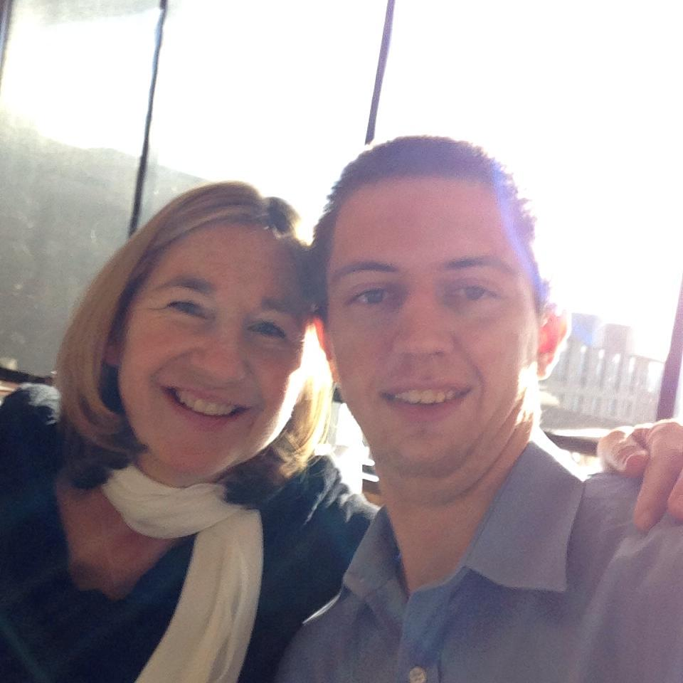

About Me
Born and raised in Raleigh,NC, I enjoy learning and pushing myself. I have 4 dogs, love video games, obssessed with Game of Thrones and like to try new foods and experiences. I am learning to code because I have always been fascinated with how people are able to get computers to do seemingly complex things so easily. Also, I wanted a career change from what I wasd doing. It was extremely physical work and it was also extremely long hours.
At home I have 4 Bouvier Des Flanders. They are large, hairy dogs originally from Holland/Belgium that were bred to herd cattle and pull carts. They are Awesome! They are known for having a stubborn disposition, thick double coats, and for carting supplies in WWII. They are extremely smart and combined with their stubborness can make them difficult sometimes. However, they are easy to live with because they shed little, have level temperaments, and are great watch dogs.
Connect With Me